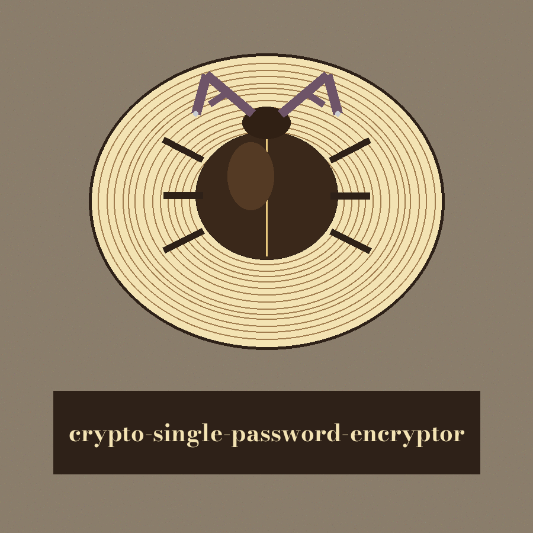
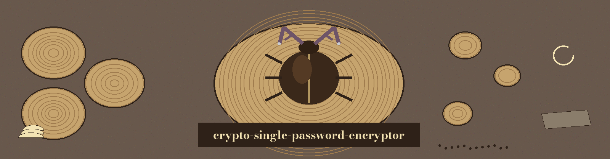

crypto-single-password-encryptor: Stag Beetle Log Pile Sanctuary
Theme: Stag Beetle Log Pile Sanctuary. Headings in Bodoni Moda, reading text in Alegreya Sans.


The Key File Governs Everything Here
One Password per File, Nothing More
Anyone Holding Token and Key Alike Can Read It
The Delivered Work
A small command line tool encrypts one password string and saves the resulting token to a file, and later decrypts a saved token back to the original wording, using the Fernet symmetric encryption of the Python cryptography library with a key held in a local key file. It is not a vault with accounts or entries: it stores one password per file and encrypts password strings rather than whole files.
The Key File Governs Everything Here
On first use a key file with the fixed name crypto_vault.key is created in the current working directory and is reused on later runs from that same directory. It is created with owner only permissions of 0600. An existing key file found with group or other permissions set is tightened to 0600 with a warning printed, and a failure to tighten produces a warning that the key is readable by others and should be restricted by hand. A saved password cannot be decrypted without the exact key that encrypted it, so a token carried into a different working directory, where a different key governs, will fail.
The Two Subcommands
Encrypt takes a password string and a filename and saves the token to that file, printing a confirmation that the password was encrypted and saved. Decrypt takes a filename alone and prints the recovered password to the console after its label. No password value, example value, token value, or key material of any kind is written anywhere upon this page.
Endings
A decrypt of a missing file fails with an error message and exit code 1. A decrypt of a file that is not a valid token for the current key fails in the same way. Every failure caught by the general handler exits 1, and a successful encrypt or decrypt ends quietly at exit 0. There is no list, delete, or search subcommand, no interactive interface, and no third way to run the tool.
One Password per File, Nothing More
The install sequence in the record below is printed as the README prints it, in its three numbered steps, the clone line first and flagged in place for the identity fault recorded there. There is no PyPI package and no command bearing the repo's name, and the tool is run as python main.py from the cloned directory. The project is licensed under the GNU General Public License v3.0, and the separate LICENSE file holds that licence's full text.
Code Facts Restored from the Code
Saving a token to a filename that already holds one replaces the earlier token without warning.
A decrypt run loads its token before it touches the key, so decrypting a missing file in a fresh directory fails without creating a key file as a side effect, whereas an encrypt run in that same directory does create one.
A successful encrypt or decrypt ends at exit 0, and an encrypt failure exits 1.
Redaction override: the live README prints one concrete example password value twice, once in the encrypt example and once as the shown output of the decrypt example. Both occurrences are preserved in redacted form in this edition, the value is never reproduced, and the exclusion is recorded in the content proof.
The Preserved Record
# crypto-single-password-encryptor
A small command line tool that encrypts a single password string and saves the encrypted token to a file, and later decrypts a saved token back to the original password. Encryption uses the Fernet symmetric encryption provided by the Python cryptography library, with a key stored in a local key file.
It is not a vault with accounts or entries: it stores one password per file, and it encrypts password strings, not whole files.
## Requirements
- Python 3.10 or later (tested on Python 3.12)
- cryptography 41.0 or later, listed in requirements.txt
The other modules it uses (argparse, logging, os, sys) are part of the Python standard library and do not need to be installed.
## Installation
1. Clone the repository: `git clone https://github.com/ShadowGuardAI/crypto-single-password-encryptor.git`
2. Move into the directory: `cd crypto-single-password-encryptor`
3. Install the dependency: `pip install -r requirements.txt`
There is no PyPI package and no `crypto-single-password-encryptor` command. The tool is run as `python main.py ...` from the cloned directory.
## How the key works
On first use the tool creates a key file named `crypto_vault.key` in the current working directory and reuses it on later runs from the same directory. The file is created with owner only permissions (0600). When an existing key file is loaded with group or other permissions set, the tool tightens it to 0600 and prints a warning; if tightening fails, it warns that the key is readable by others and should be restricted by hand. Keep this file safe and backed up: a saved password cannot be decrypted without the exact key that encrypted it, and tokens decrypted from a different working directory (with a different key) will fail.
## Usage
```
python main.py [-h] {encrypt,decrypt} ...
```
### Encrypt a password
```
python main.py encrypt PASSWORD FILENAME
```
- `PASSWORD`: the password string to encrypt
- `FILENAME`: the file to save the encrypted token to
Example:
```
python main.py encrypt "REDACTED" mypassword.enc
```
This prints `Password encrypted and saved successfully.`
### Decrypt a saved password
```
python main.py decrypt FILENAME
```
Example:
```
python main.py decrypt mypassword.enc
```
This prints `Decrypted password: REDACTED`
## Limitations
- Only the two subcommands above exist. There is no list, delete, or search command, and no interactive interface.
- The first argument to `encrypt` is the password itself, not a file to encrypt. Passing a filename encrypts the filename string, not the contents of that file.
- Anyone with both the token file and `crypto_vault.key` can decrypt the password. Protect the key file like the passwords themselves, and do not commit it to version control.
- Decrypting a missing file or a file that is not a valid token for the current key fails with an error message and exit code 1.
- Do not rely on this simple tool for highly sensitive secrets; the security of the result depends on protecting the key file.
## License
crypto-single-password-encryptor is licensed under the GNU General Public License v3.0 (GPL-3.0). See LICENSE.